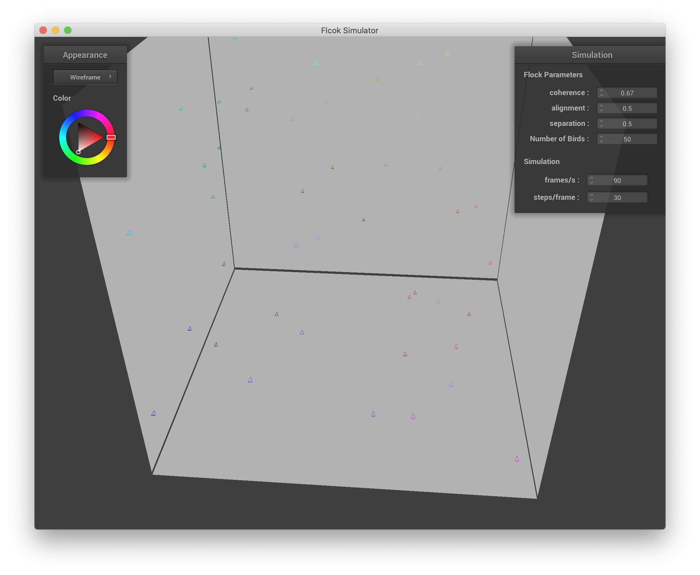
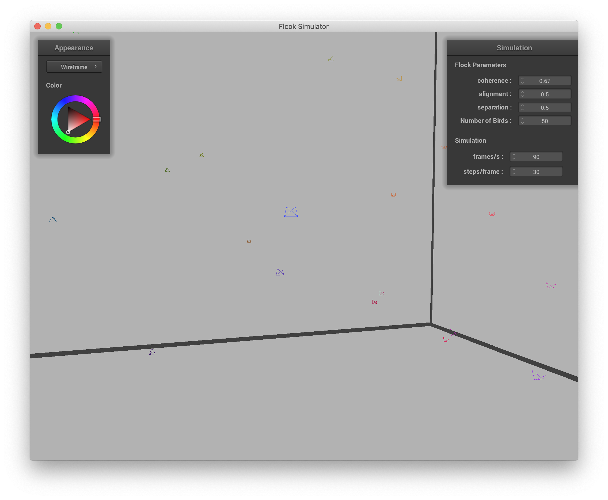
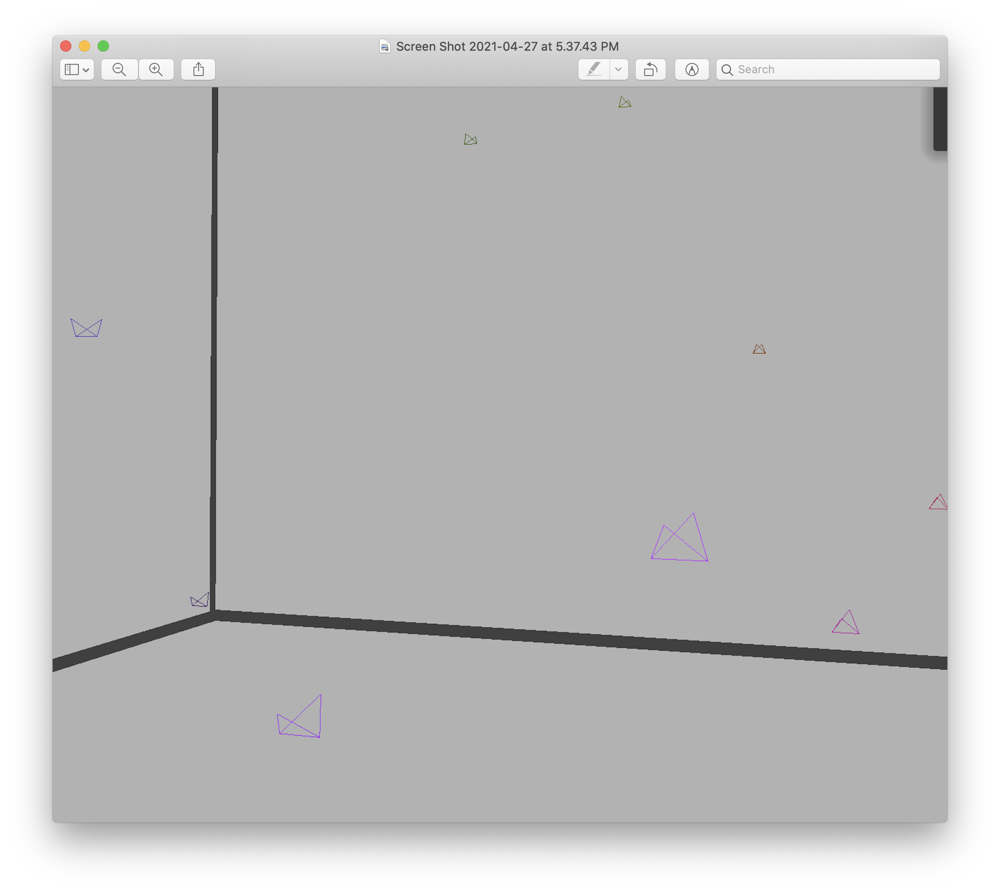
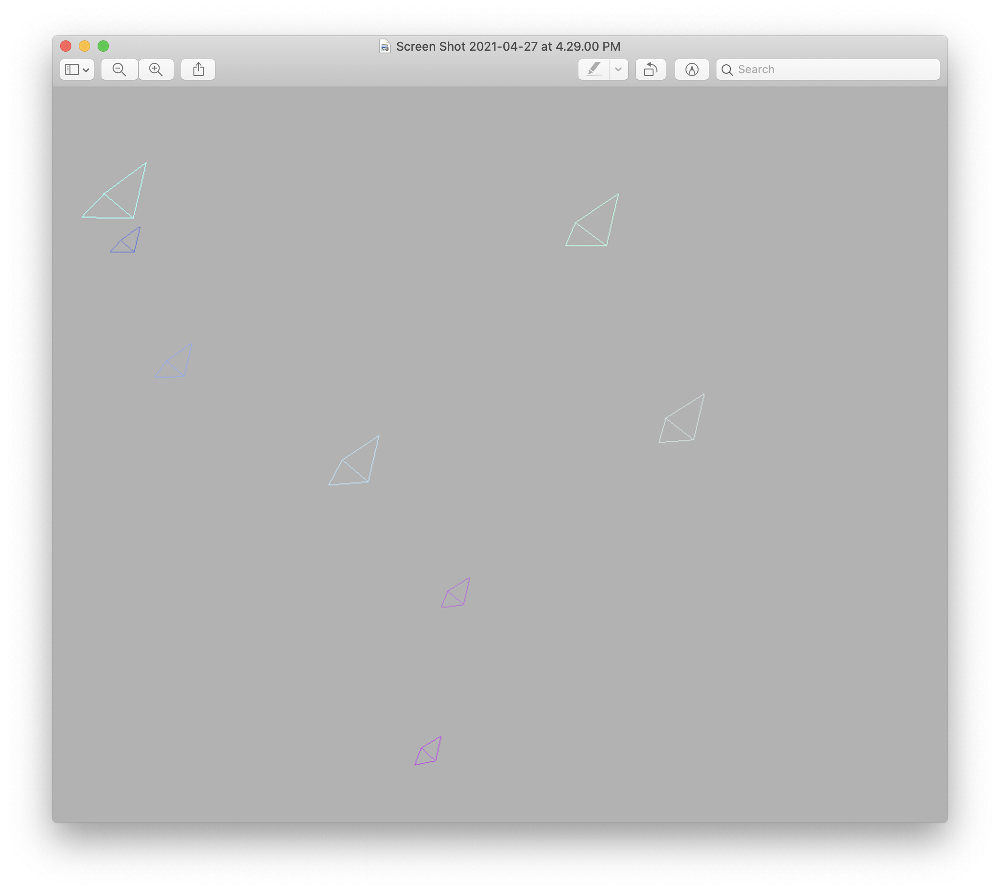
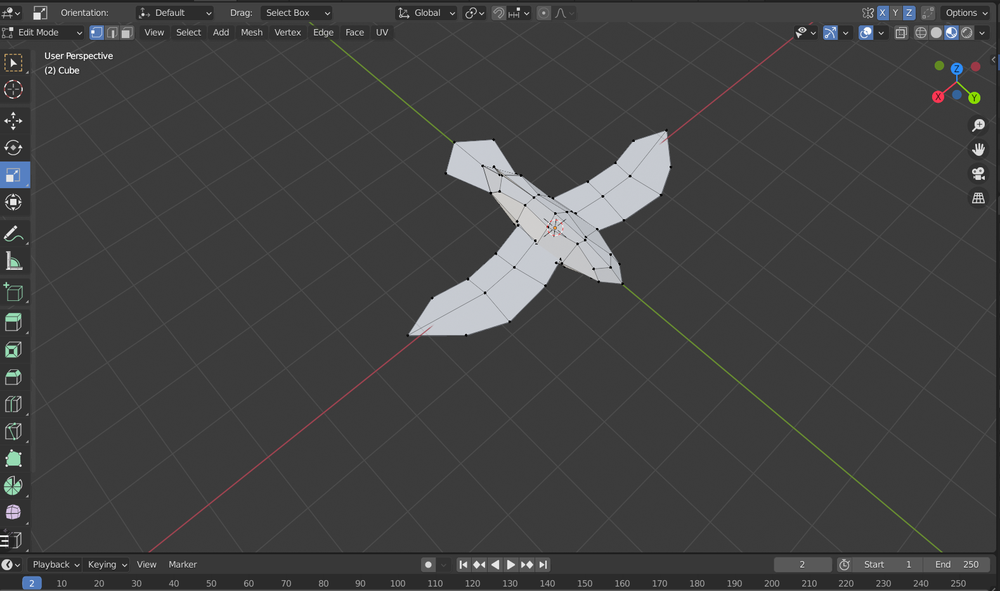

In this project, we try to implement a 3D flocking simulation. All birds will move generally towards a designated dirction but with some variation according to forces on them. The forces include internal forces like separation, alignment and cohesion, and external forces like wind. We adapt the nanoGUI from our last course project, and user can change the number of birds to simulate, the weight of each of the force as well as the designated direction using the sliding barw on the GUI.
To start with, we represent every bird as a point mass, and store its attributes position and speed.
At the beginning of the simulation, every bird is put in a random position in the given 3D space. Once the simulation starts,
all bird will move with an initial velocity in the designated direction set by x, y, z sliding bars. Once the bird reaches
the edge of the space, which is defined as a (1,1,1)-size cube), the bird will "bounce" back.
More interactive features include changing overall simulation speed by changing frames/s and steps/frame
under simulation on the panel. You can also
change the number of birds for simulation. Random birds will be removed for reduction and new birds will be put in random
position for addition.
To better visualize the space, we added 4 walls to represent 4 out of the 6 faces of the space cube.
|  |  |
We draw simple bird shapes using straight lines in 3D. Therefore, in different view points, the birds will look different. We also assign random colors for birds for fun!
|  |  |
We would like to change the 3D bird model to a more realistic one in the future. The draft is as below. For now, for better visualization, we will use colored balls to represent the point masss of birds.

To make sure our point masses behave just like real birds, we need to further implement forces between birds. According to Boids Paper, there are mainly three forces: Separation, Alignment and Cohesion. According to Newton's Second Law F=ma, these force will produce acceleration, therefore cause on velocity(speed and direction) and position of birds. We apply a weight for each of the force and it can be adjusted by the sliding bar on the GUI.
We often see a large flock of birds flying together. That's reasonable, because birds want to stay together for attack protection and support. For each bird, the cohesion is calculated by average position of all the neighboring birds. Neighboring birds are defined as other birds within a given distance away from the bird.
Of course birds try to avoid colliding with each other, therefore there's also a separation force between each pair of birds close to each other. The force is calculated by averaging displacement from neighboring birds to the bird.
For birds to reach their destination, they need to have an overall heading direction instead of attracting and repelling each other without moving forward. The alignment is average of velocity difference between neighbor birds and the bird. The average of the velocity difference will be added to velocity of the bird directly.
there are also external forces. We implemented wind blowing to a random direction, although the effect may
not be significant.
With all these forces implemented, we can now see how the points move like real flocks.
To summarize, the interactive features include: